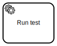
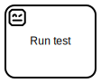
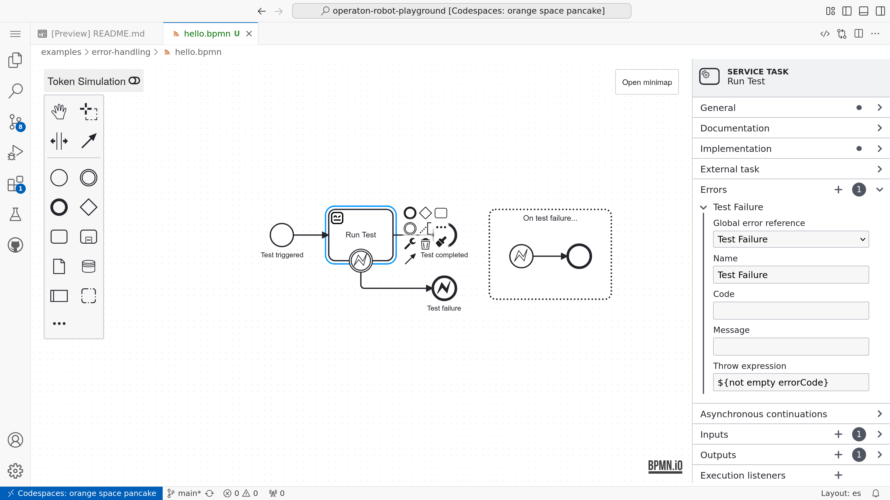
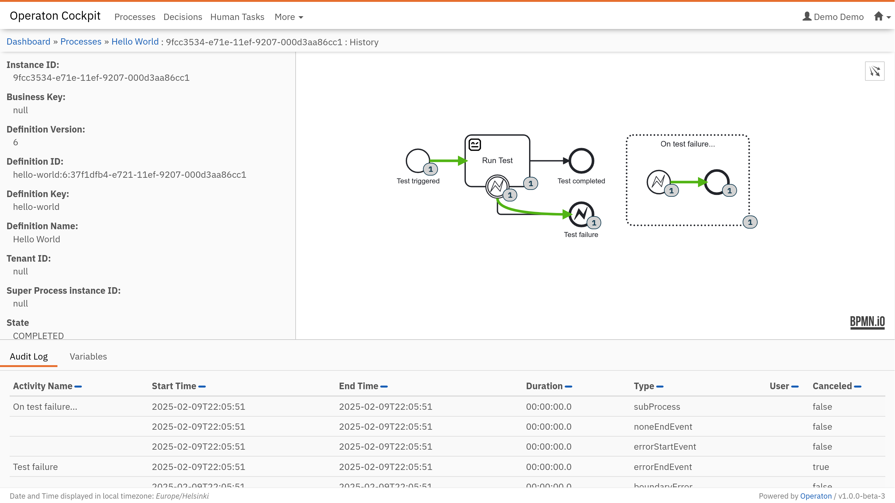

BPMN with Robot Framework#
After learning the basics of BPMN modeling and how to model for execution with Operaton, it should be clear that external  Service Task is the most flexible way to orchestrate Robot Framework test or task suites with BPMN, using the Operaton BPM engine.
Tip
The playground ships with a dedicated plugin for rendering external Service Task elements with a word robot in their ID with  robot icon.
Introducing pur(jo)#
pur(jo) is an experimental command line tool for orchestrating Robot Framework test or task suites with the Operaton BPM engine. It long-polls external service tasks from the Operaton engine, executes mapped Robot Framework test and task suites with the uv Python environment manager, and finally reports the results or errors back to the engine.
$ pur
Usage: pur [OPTIONS] COMMAND [ARGS]...
pur(jo) is a tool for managing and serving robot packages.
╭─ Commands ────────────────────────────────────────────────────────────────╮
│ serve Serve robot.zip packages (or directories) as BPMN service tasks. │
│ init Initialize a new robot package into the current directory. │
│ wrap Wrap the current directory into a robot.zip package. │
│ run Deploy process resources to BPM engine and start a new instance. │
│ operaton BPM engine operations as distinct sub commands. │
╰───────────────────────────────────────────────────────────────────────────╯
Note
The operaton subcommand is also available as bpm for backwards compatibility.
Tip
Before trying out pur(jo) in the playground, first start the Operaton BPM engine with the make start command in the terminal.
“Hello World” for pur(jo)#
To get started, create a new directory for your bot:
$ mkdir hello-world
$ cd hello-world
Then initialize the directory with pur(jo):
$ pur init
This would create a new hello-world directory with the following files:
.python-version- Python versionpyproject.toml- Python dependencies and topic mappinguv.lock-uvdependency lock filehello.bpmn- example BPMN model for trying out the packageHello.py- example Robot Framework keyword libraryhello.robot- example Robot Framework test suiteREADME.md- Empty README for your use..wrapignore- Specifies files to exclude when packaging withpur wrap.
Tip
Use pur init --python to create a pure Python template instead of a Robot Framework template.
Next, start a new process instance with the example BPMN model:
$ pur run hello.bpmn
Then, start the pur(jo) worker to execute the Robot Framework test suite:
$ pur serve .
Now you should be able to see pur(jo) executing the Robot Framework test suite from the current project directory and reporting the results back to Operaton.
Mapping test and tasks#
Every pur(jo) project includes pyproject.toml, which is a Python project configuration file. For pur(jo) projects, it also contains a mapping from BPMN topics to Robot Framework tests or tasks:
[tool.purjo.topics."My Topic in BPMN"]
name = "My Test in Robot"
on-fail = "ERROR"
process-variables = true
In the mapped value, name is passed as the argument -t to robot when executing the Robot Framework. For example, name = "*" would run all tests or tasks in the package.
The other two options, on-fail and process-variables are optional. Option on-fail controls the behavior of purjo when the executed robot test or task fails:
on-fail = "FAIL"is the default, which raises on incident at the Operaton engine.on-fail = "COMPLETE"completes the task at Operaton with success, but sets local task variableserrorCodeanderrorMessagefrom the last Robot Framework test or task failure.on-fail = "ERROR"completes the task at Operaton with a BPMN error, which allows catching the error in BPMN with a BPMN error boundary event.
Finally, option process-variables = true makes purjo to pass all process variables to the Robot Framework test or task as global variables using --variablefile command line argument. The default behavior is false, which passes only the variables defined in the BPMN task inputs.
Dependency management#
Test and task package dependencies are managed with the uv Python environment manager. For example:
$ uv add requests
would add the requests Python package to the pyproject.toml and update the uv.lock files.
Project packaging#
To package the current directory into a deployable robot.zip file, use:
$ pur wrap
To package an offline-capable robot.zip, wrap the package with:
$ pur wrap --offline
This will include uv’s project-specific .cache directory in the package. Packages with .cache can be executed with uv’s --offline flag, utilizing the packaged cache.
Development helpers#
pur(jo) is designed to support fast iterations while developing Robot Framework test and task packages to be orchestrated with BPM. The following commands should be helpful:
pur initinitializes a new project in the current directory.pur operaton deploy <RESOURCES...>deploys given resources as a single multi-file deployment to the Operaton BPM engine.pur operaton start <KEY>starts a new process instance from the deployed process definition with the given key (ID in the modeler, but Key in the engine).pur operaton create <FILENAME>creates a new BPMN, DMN, or Form file with unique IDs.pur run <RESOURCES...>is a shortcut for both deploying resources to the BPM engine and starting a new process instance defined in them.pur serve .serves the project from the current directory as an external BPMN service task worker, following the topic mapping defined in itspyproject.toml.
Tip
Both pur operaton start and pur run accept option --variables, which accepts a JSON string, a JSON filename or - to read JSON from stdin. JSON object would then be parsed as key-value-pairs into initial process variables for the started process.
Note
Both pur operaton deploy and pur run try to migrate previous process versions to the latest version deployed with the command, unless called with the --no-migrate flag.
Executing test and task packages#
pur serve <PACKAGES...> serves the given robot.zip packages or directories with developed packages as external BPMN service task workers by following their topic mapping in pyproject.toml:
$ pur serve --help
Usage: pur serve [OPTIONS] ROBOTS...
Serve robot.zip packages (or directories) as BPMN service tasks.
╭─ Arguments ─────────────────────────────────────────────────────────────────────────────────╮
│ * robots ROBOTS... [default: None] [required] │
╰─────────────────────────────────────────────────────────────────────────────────────────────╯
╭─ Options ───────────────────────────────────────────────────────────────────────────────────╮
│ --base-url TEXT [env var: ENGINE_REST_BASE_URL] │
│ [default: http://localhost:8080/engine-rest] │
│ --authorization TEXT [env var: ENGINE_REST_AUTHORIZATION] │
│ --secrets TEXT [env var: TASKS_SECRETS_PROFILE] │
│ --timeout INTEGER [env var: ENGINE_REST_TIMEOUT_SECONDS] │
│ [default: 20] │
│ --poll-ttl INTEGER [env var: ENGINE_REST_POLL_TTL_SECONDS] │
│ [default: 10] │
│ --lock-ttl INTEGER [env var: ENGINE_REST_LOCK_TTL_SECONDS] │
│ [default: 30] │
│ --max-jobs INTEGER [default: 1] │
│ --worker-id TEXT [env var: TASKS_WORKER_ID] │
│ [default: operaton-robot-runner] │
│ --log-level TEXT [env var: LOG_LEVEL] │
│ [default: DEBUG] │
│ --on-fail [FAIL|COMPLETE|ERROR] [default: FAIL] │
│ --help Show this message and exit. │
╰─────────────────────────────────────────────────────────────────────────────────────────────╯
Tip
pur serve --on-fail=ERROR would report failed robot executions as BPMN errors, which allows easy routing of execution in BPMN using Error Boundary Events.
BPMN variables in robot#
pur(jo) passes BPMN variables defined in external Service Task inputs to Robot Framework execution as global variables using --variablefile command line argument.
Therefore, robot variable ${message} in the following robot suite
*** Variables ***
${message} Hello World
*** Test Cases ***
Log message
Log ${message}
would be replaced with the value of local variable message defined in the Service Task inputs.
Robot variables to BPMN#
Robot Framework as such does not have a concept of output or result variables. In other words, there is no single right way of defining, what should e returned back to BPM engine.
At first, pur(jo) always returns log.html and output.xml files are local task variables into engine. On error, pur(jo) returns also the last Robot Framework test or task failure as local errorCode and errorMessage variables or Operaton incident or BPMN error arguments.
For custom variables, pur(jo) extends Robot Framework variable scope with two new scopes: BPMN:TASK and BPMN:PROCESS. These scopes are used in robot test or task suites to define variables, which should be returned back to BPMN engine. For example:
*** Test Cases ***
Set BPMN variable
VAR ${message} Hello World! scope=BPMN:TASK
would set a BPMN variable message with value Hello World! for the current task scope in Operaton. This variable could then be exported from task to process scope with task outputs.
Unfortunately, scope=BPMN:TASK is not valid robot syntax, because of undefined scope. Therefore, pur(jo) supports the following pattern, where ${BPMN:TASK} variable with valid default value is used instead. pur(jo) would then replace the default value with its custom scope when executing robot.
This would be valid robot syntax, that would also return a BPMN variable when executed with pur(jo):
*** Variables ***
${BPMN:TASK} local
*** Test Cases ***
Set BPMN variable
VAR ${message} Hello World! scope=${BPMN:TASK}
Simlarly, the following example would set the variables direcly onto process scope, not requiring definition of task outputs in the BPMN task:
*** Variables ***
${BPMN:PROCESS} local
*** Test Cases ***
Set BPMN variable
VAR ${message} Hello World! scope=${BPMN:PROCESS}
Warning
If a variable is defined in input mapping, scope=${BPMN:PROCESS} cannot pass the variable back to the process scope, but only updates the variable in the task scope instead. Therefore output mapping is still required for passing variables back to the process scope.
Handling failures#
Handling orchestrated Robot Framework test or task failures in BPMN may have different requirements in different processes. In task automation, for example, unexpected failure should usually halt the process for manual investigation (by raising a new incident at Operaton engine). In test automation, such failures are usually expected and it is enough to tear down the test environment and report the failure.
In Operaton engine an external Service Task can fail in three main ways:
Task worker reports the task as failed without retry instructions, which creates manually managed incident at the engine.
Task worker reports the task as completed with BPMN error, which allows catching the error redirecting the process automatically in the process flow with BPMN error boundary event.
Task worker reports the task as successfully completed, but with BPMN error throw expression, which could then be caught and redirected in the process flow using BPMN error boundary event.

For handling these different failure types, pur serve has option --on-fail=FAIL|COMPLETE|ERROR to configure how failed robot executions are reported back to the engine, unless task have topic specific configuration in pyproject.toml.
By the default value, FAIL, pur serve reports failed robot executions as failed tasks without automated instructions, creating incidents to be manually handled at the engine. (Note: pur(jo) should eventually support configuration settings allowed per listened topic.)
With COMPLETE, failed robot executions are reported as successfully completed tasks, but two local task variables errorCode and errorMessage. These variables are null on Robot Framework PASS. On Robot Framework FAIL, errorCode contains the first line of the last Robot Framework test or task failure, and errorMessage contains the rest. This allows configuring an throw expression BPMN when errorCode has a value.
With ERROR, failed robot executions are reported as completed tasks with a BPMN error, which allows redirecting the process with a BPMN error boundary event or capturing all errors with an event-based subprocess with an error start event.

Note
To be more complete, external Service Task can also fail in two other ways:
Task worker reports the task as failed, but with retry timeout as automated retry instrutions, and the task will be automatically and silently retried by the engine later.
Task worker disappears after locking the task and before completing it, and the task will be automatically released for a retry by another worker later.
Managing secrets#
pur(jo) provides a flexible system for managing sensitive information (secrets) using different providers (e.g., local files, HashiCorp Vault). Secrets are injected into your tasks as variables, but handled securely to prevent accidental exposure.
Configuration#
Secrets are configured in pyproject.toml under [tool.purjo.secrets]. You can define multiple profiles.
File provider#
The file provider loads secrets from a JSON file:
[tool.purjo.secrets.default]
provider = "file"
path = "secrets.json"
The corresponding secrets.json file:
{
"api_key": "my-secret-key"
}
Vault provider#
The vault provider loads secrets from HashiCorp Vault:
[tool.purjo.secrets.prod]
provider = "vault"
path = "secret/my-app"
mount-point = "secret"
This requires VAULT_ADDR and VAULT_TOKEN environment variables to be set.
Using secrets#
When running pur serve, purjo uses the default profile if one exists. You can specify a different profile or a direct file path using the --secrets option:
# Use the 'prod' profile from pyproject.toml
$ pur serve --secrets prod .
# Use a specific secrets file directly (bypassing pyproject.toml)
$ pur serve --secrets ./my-secrets.json .
Secrets are injected as variables into your Robot Framework or Python tasks:
*** Tasks ***
Use API Key
Log To Console The API Key is: ${api_key}
Tip
If robotframework >= 7.4b2 is used, secrets are automatically converted to Secret objects, which mask their values in logs.
Warning
Never commit secrets files to version control. Add secrets.json (and any other secret files) to your .gitignore. Use the vault provider for production environments to avoid storing secrets on disk.
Testing tasks#
You can test pur(jo) Robot Framework tasks locally without running Operaton (or any BPM engine) using two complementary approaches:
Integration testing with
robotframework-robotlibrary(Run Robot Test/Run Robot Task) to execute a test/task from another.robotfile and assert results via variable overrides.Functional testing with the
purjoRobot Framework library (Get Output Variables) to execute a configured topic and validate the returned output variable dictionary.
Pick integration tests for “does this Robot suite behave as expected when called with variables?”, and functional tests for “does my pyproject.toml topic config + pur(jo) execution produce the right BPMN-style outputs?”
Integration testing (RobotLibrary)#
RobotLibrary is a Robot Framework library for meta-testing: it lets you write Robot Framework tests that execute tests/tasks from another .robot file.
This style is especially useful with pur(jo) packages because:
your task inputs are already expressed as suite variables (e.g.
${name}), andyou can override those variables as keyword arguments when calling
Run Robot Test/Run Robot Task.
Installing#
Add robotframework-robotlibrary as a development dependency in your robot package:
$ uv add --dev robotframework-robotlibrary>=1.0a3
If you created your package using pur init, an integration-test example is typically included already.
How input variables are mapped#
RobotLibrary provides these keywords:
Run Robot Test suite_path test_name **variables
Run Robot Task suite_path task_name **variables
The **variables part is passed as NAME=value pairs. Each pair overrides the corresponding suite variable in the target suite.
If you have inputs as a dictionary, you can expand it into keyword arguments:
&{inputs}= Create Dictionary name=John Doe answer=42
Run Robot Test ${CURDIR}/hello.robot My Test in Robot
... &{inputs}
Making output variables assertable (BPMN:PROCESS=global)#
The default pur(jo) task fixtures typically set ${BPMN:PROCESS} to local and then emit output variables using Robot Framework’s built-in VAR keyword with scope=${BPMN:PROCESS}.
When you run the target suite via RobotLibrary, output variables written with VAR ... scope=${BPMN:PROCESS} are easiest to assert from the calling (meta) test when the scope is set to global process scope. In the default fixture, you enable that by overriding ${BPMN:PROCESS}:
*** Settings ***
Library RobotLibrary
Test Template Test Hello
*** Test Cases *** NAME
Hello John John Doe
Hello Jane Jane Doe
*** Keywords ***
Test Hello
[Arguments] ${name}
Run Robot Test ${CURDIR}/hello.robot My Test in Robot
... BPMN:PROCESS=global
... name=${name}
Should Be Equal ${message} Hello ${name}!
That BPMN:PROCESS=global is just another variable override: it sets ${BPMN:PROCESS} inside the called suite so that VAR ... scope=${BPMN:PROCESS} writes variables to a scope that the meta-test can assert afterwards.
Functional testing (purjo library)#
pur(jo) also includes a Robot Framework library, named purjo, which executes a configured topic from a robot package and returns the resulting output variables.
Use this when you want to validate:
topic configuration in
pyproject.toml([tool.purjo.topics."..."]),variable mapping in/out as the engine would do it,
error handling behavior (
on-fail), andsecrets handling.
The core keyword provided by the library is Get Output Variables. It executes a specific task (identified by its topic) from a robot package using a set of input variables and returns the resulting output variables:
*** Settings ***
Library purjo
Library Collections
*** Test Cases ***
Test My Task
# Define input variables
&{inputs}= Create Dictionary name=Alice
# Execute the task locally
&{outputs}= Get Output Variables . My Topic in BPMN ${inputs}
# Verify the output
Should Be Equal ${outputs}[message] Hello, Alice!
The Get Output Variables keyword accepts the following arguments:
path: Path to the robot package. This can be the current directory (.) during development or a path to a packagedrobot.zipfile.topic: The BPMN topic name as configured in yourpyproject.tomlfile.variables: A dictionary containing the input variables that the task expects.secrets: (Optional) A dictionary containing the secrets that the task expects.
Testing with secrets#
If your task requires secrets, you can pass them as a dictionary using the secrets argument:
*** Settings ***
Library purjo
Library Collections
*** Variables ***
&{Input Variables} name=John
&{Expected Output Variables} message=John's birthday is tomorrow
&{Secret Variables} birthday=tomorrow
*** Test Cases ***
Test Hello World
${Output Variables}= Get Output Variables ${CURDIR}${/}hello My Topic in BPMN ${Input Variables} ${Secret Variables}
Dictionaries Should Be Equal ${Output Variables} ${Expected Output Variables}
This approach allows you to build a comprehensive regression test suite for your BPMN tasks, ensuring they behave correctly with various inputs and edge cases.